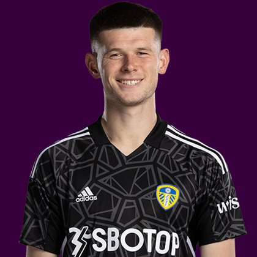

PITCHKEEP
Premier League ranks
Player File · GKP ARS · Premier #312

Illan Meslier
GKP · Arsenal · age 26 · £5.0m
Plus
- 110.0 Sleeper BPL 2025 points (Pitch #115).
- 11 Premier League goals in 2025/26.
Minus
- Board spread 3-226 (FPL Form to FPL Price Board).
PitchKeep Take · The Premier
Illan Meslier is a goalkeeper for Arsenal, age 26, £5.0m. The Premier ranks him 312th overall by splitting Sleeper BPL 2025 (#115, 110.0 points) with the consensus of 3 other boards (124.0). Last year's Sleeper line ran 9 spots ahead of the expert/FPL mix. The third list keeps some of that production bump and refuses to throw the other boards out. That is the whole point of not just republishing The Pitch.
The 2025/26 line is 0 starts, 0 minutes, 0 saves, 0 clean sheets and 0 goals against. Official FPL scored it at 0 points. Sleeper's table turned the same counting stats into 110.0. Keepers get 8 a clean sheet, 2 a save, and −2 a goal against. That is a different sport than FPL's 10-from-saves cap, and it is why this board ranks them at all.
The job is shot-stopping volume in front of whatever Arsenal is this year. 0 saves is the Sleeper case. 0 clean sheets is the FPL case. If the back line leaks, both numbers move together and this ranking goes with them. The friendliest board is FPL Form at 3; the coldest is FPL Price Board at 226.
Market: £5.0m, 4 boards on the file. Price is the FPL tax, not the rank. The Premier is who produced and who the boards still believe. FPL's own EP-next is 2.6.
Instruction: he is on the 400, which is already a statement, and he is not a star. Stash in Sleeper if the minutes are real. Do not let a Pitch screenshot make you start him over a Premier top-80. Nearby on The Premier: Djed Spence, Kepa Arrizabalaga Revuelta, Enes Ünal. Versus The Pitch (Sleeper-only #115), the hybrid moves him down to #312. That move is the third list doing its job.
He is 26, which on this board is neither a dart nor a warning label. Prime-age goalkeepers get ranked on what they just did and whether Arsenal still gives them the ball. 0 minutes says yes. The 2026/27 FPL price (£5.0m) is the app's guess at whether that continues. The Premier is the blend of that guess and the box score.
You start one goalkeeper. That positional cap is why The Premier will not put a saves leader in the overall top ten unless the consensus also shows up. Meslier's Sleeper line (110.0) already made The Pitch. The other boards (124.0) decide how far the hybrid lets him climb. Draft him as a keeper, not as an outfielder who happens to have gloves.
How to use the file: The Pitch is the Sleeper-only 400 (he is #115 there). The Premier is the 50/50 with every other board we track. Attack, Midfield, Defence, and Keepers re-rank the same Sleeper table by position. BK Value on this page follows The Premier when you are on the hybrid calculator and The Pitch when you are on the Sleeper calculator. Same curve either way - 12,000 at 1.01.
Board graph
Spread 3-226 · 4 sources
Tape · 2025/26 Premier League
Illan Meslier: BEST SAVES of 2020/21 Premier League season
Every Board
Spread 3-226 · 4 sources
| Source | Rank |
|---|---|
| FPL Form | 3 |
| FPL EP Next | 22 |
| Sleeper BPL 2025 | 115 |
| FPL Price Board | 226 |
All players · The Premier · The Pitch · PK News · Calculator